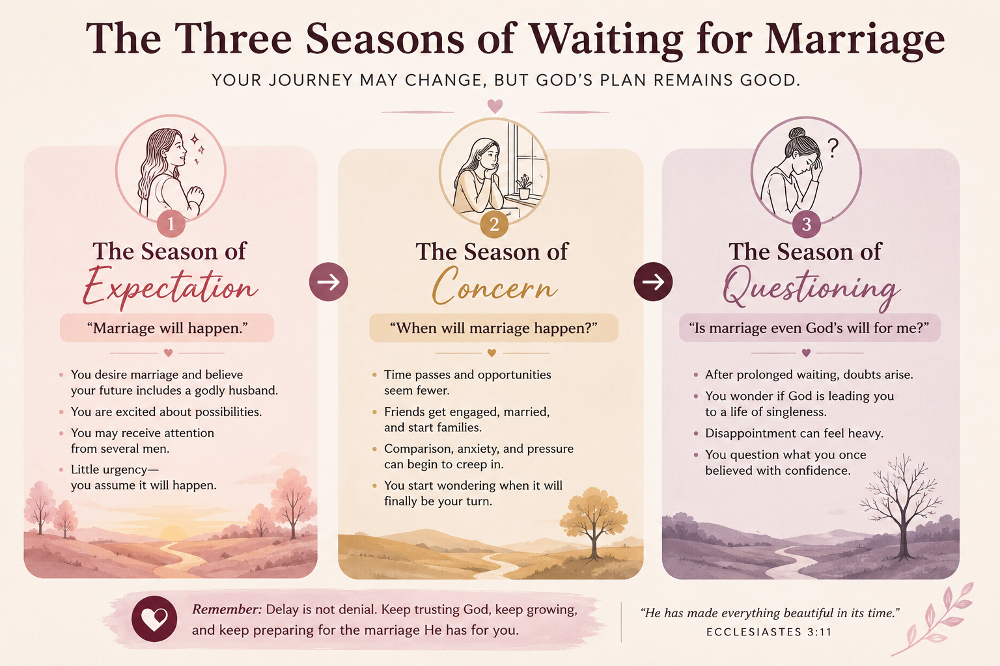

“What if marriage is simply not God's will for me?”
Maybe you have asked yourself that question.
You desire marriage. You have prayed about it. You have tried to trust God. Perhaps you genuinely believed that by this stage of your life, you would already be married.
But it hasn't happened.
And after waiting for a while, a difficult thought begins to creep in:
“Maybe God doesn't want me to get married.”
If that thought has crossed your mind, I want us to talk about it—because sometimes we interpret delay as though it were a clear message from God.
And the two are not necessarily the same.
The Three Seasons of Waiting for Marriage
When we speak with single ladies about marriage, we often notice that this question doesn't usually arise at the beginning. The journey can sometimes move through three different seasons.

1. The Season of Expectation: “Marriage will happen.”
At first, there is often excitement.
You imagine meeting the right man, getting married, building a home together, and enjoying the marriage you have prayed for. You aren't particularly worried about when it will happen. You simply assume that it will.
During this season, you may also receive attention from several men. Some may not be right for you, and rejecting a man who lacks the faith, character, maturity, or values you need in a husband can be a wise decision.
But sometimes we can also reject potentially good men because they don't fit the picture we have created in our minds.
He isn't tall enough.
His personality isn't exactly what I pictured.
He doesn't have the career I expected my husband to have.
There is a difference between godly standards and personal preferences that we have turned into non-negotiables.
That distinction matters.
2. The Season of Concern: “When will marriage happen?”
Then time passes.
Perhaps the attention you once received becomes less frequent. Meanwhile, friends are getting engaged, getting married, and starting families.
Suddenly, you begin asking:
When will I get married?
How much longer am I going to wait?
This is where anxiety and comparison can creep in. You may even feel tempted to settle for a relationship you once would have recognized as unsuitable simply because you are tired of waiting.
3. The Season of Questioning: “Will marriage happen at all?”
After enough time passes, the question can change again.
It is no longer simply:
“When will I get married?”
It becomes:
“Maybe marriage isn't God's will for my life.”
But does a delayed marriage necessarily mean God is calling you to lifelong singleness?
What Does the Bible Say About Remaining Unmarried?
In Matthew 19:12, Jesus speaks about people who choose to remain unmarried for the sake of the Kingdom of Heaven.
Paul also speaks positively about singleness in 1 Corinthians 7, explaining that an unmarried person may have certain freedoms to devote himself or herself more fully to the things of God.
So yes, Scripture recognizes singleness as a legitimate path.
But Scripture's recognition of singleness does not mean that every person who has waited longer than expected for marriage should conclude that lifelong singleness is God's calling for them.
Ask yourself:
- Do I genuinely desire marriage?
- Do I desire the companionship of a husband and the opportunity to build a godly home?
- Have I deliberately chosen lifelong singleness because I believe God is leading me to devote myself to Him in that way?
If not, be careful about making a theological conclusion out of your disappointment.
Sometimes the reasoning becomes:
I prayed.
I waited.
It hasn't happened.
“Therefore, God must not want me to marry.”
But the waiting itself does not tell you that.
Delay does not automatically mean denial.
“It hasn't happened yet” is very different from “It will never happen.”
Maybe There Is a Better Question to Ask
Instead of only asking:
“Is marriage God's will for me?”
perhaps another question is worth exploring:
“Why might marriage be delaying, and is there anything I can wisely do while I wait?”
That changes the conversation.
Waiting for marriage doesn't have to mean sitting passively and hoping that one day a husband somehow appears.
- There may be expectations to reconsider.
- There may be relationship patterns to examine.
- There may be opportunities you have overlooked.
- There may be fears you need to confront.
- There may be spiritual, emotional, relational, or practical areas in which you need to grow.
And sometimes, there may simply be a need to continue trusting God while living intentionally.
The important thing is not to allow disappointment, fear, or desperation to make the decision for you.
If You Are Waiting for Marriage Right Now...
Don't allow another person's timeline to become the measuring stick for your life.
And don't allow the length of your waiting season to convince you that something God has not said must be true.
Examine your expectations. Learn to recognize character. Understand what actually makes a man a good husband. Become clearer about the difference between what you need in a husband and what you simply prefer.
Most importantly, continue seeking God's wisdom.
Waiting on God does not necessarily mean doing nothing.
WANT TO GO DEEPER?
Continue the Journey with Single and Searching?

If this is the season you are currently navigating, we wrote Single and Searching?: The Lady's Guide to Find and Attract the Right Husband — Practical Wisdom for Ladies Preparing for Marriage specifically to help single women who desire marriage approach that desire with faith, wisdom, and intentionality.
In the book, we go deeper into how to prepare for marriage, recognize the right kind of man, examine your expectations, navigate relationships wisely, and live intentionally while waiting.
You can wait on God while also preparing wisely for the marriage you are praying for.
— Dr. Michael Agronah & Dr. Mary Agronah
Beautiful Marriage Garden